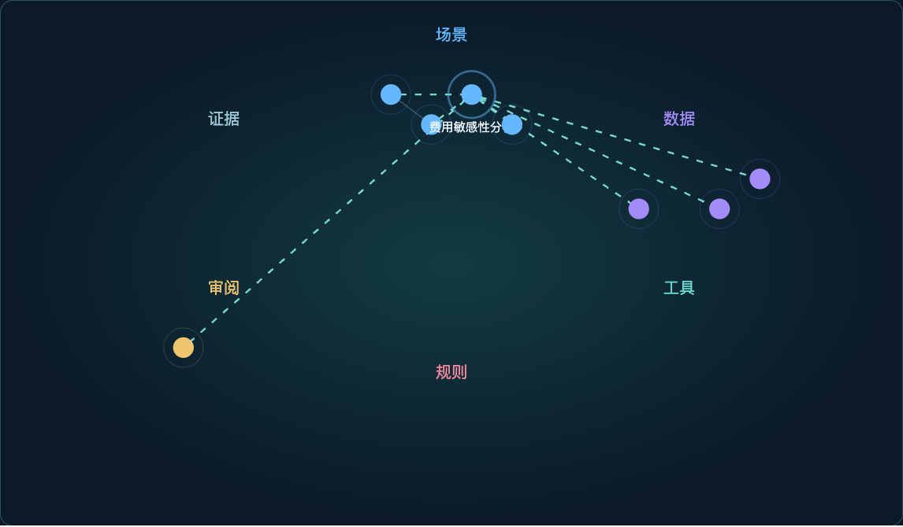
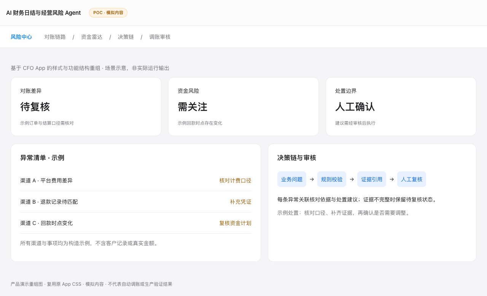
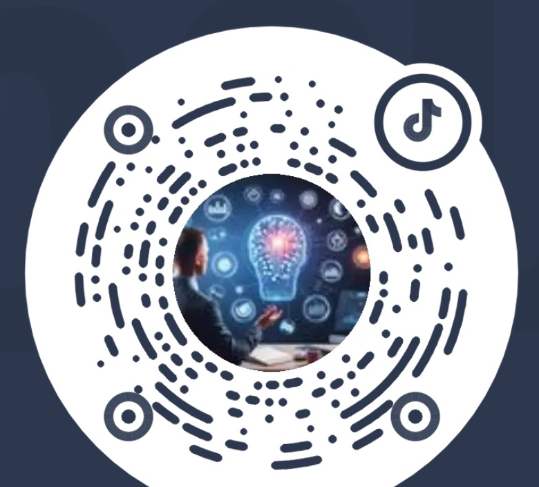
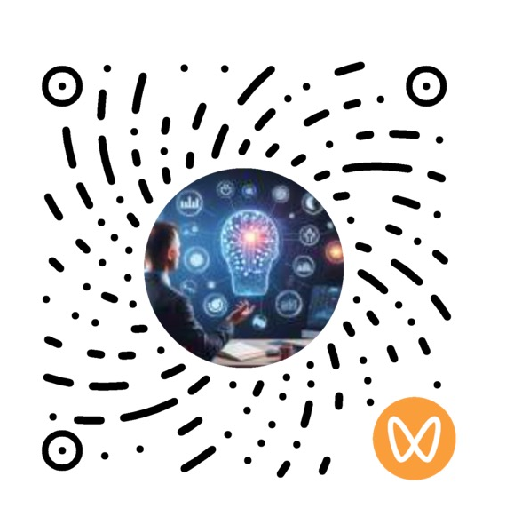

企业 AI 场景门户
统一组织业务任务、分析流程与治理证据。
我的贡献：产品组织、任务流程与人机协同设计。
ENTERPRISE AI / FIELD DELIVERY / PRODUCT
聚焦 AI 财务、经营分析与流程智能化。
企业 AI 产品经理 / FDE。结合财务、ERP 与数字化交付经验，开展企业 AI 场景规划、产品设计与 POC 验证。
SELECTED WORK
案例使用脱敏方案、合成数据或模拟界面；验证范围与限制见案例页。

统一组织业务任务、分析流程与治理证据。
我的贡献：产品组织、任务流程与人机协同设计。

如何定义财务风险场景、计算口径与解释路径？
我的贡献：财务场景与计算、证据规则规划。
将预测、规划、计算、校验与叙述分层，支持面向业务人员的受控分析与建议生成。
查看匿名案例将制度、流程与业务对象连接为可治理的知识与语义层，明确 RAG、结构化事实和权限边界。
查看匿名案例CAPABILITIES
成熟度诊断、场景池、价值排序、路线图与投资边界。
交付类型（仅展示脱敏示例）：场景优先级矩阵、建设路线图查看关联案例 ↗Agent 闭环、产品需求、交互设计、人机协同与评测标准。
交付类型（仅展示脱敏示例）：产品需求、原型、验收标准查看结构化规格设计示例 ↗现场调研、问题澄清、共创 POC、验证迭代与交付协同。
交付类型（仅展示脱敏示例）：调研发现、POC计划、验证记录查看关联案例 ↗业财融合、财务共享、经营分析、流程控制与企业系统集成。
交付类型（仅展示脱敏示例）：流程蓝图、控制点、集成方案查看关联案例 ↗业务语义、指标口径、结构化事实、RAG 与知识治理边界。
交付类型（仅展示脱敏示例）：指标字典、业务对象关系、知识治理规则查看关联案例 ↗权限、审计、人工审批、固定评测集、灰度发布与持续优化。
交付类型（仅展示脱敏示例）：评测方案、权限边界、异常处置设计查看关联案例 ↗梳理用户、流程、例外、系统与真实业务基线。
以价值、数据条件、风险和可衡量性确定 MVP。
定义输入、判断、动作、结果、状态、责任人与边界。
用固定评测、人工协作与受控 POC 验证是否值得扩张。
PROFILE
企业 AI 产品经理 / FDE，连接管理层、业务团队与技术团队，让 AI 从场景判断走向受控交付。
曾任某外企信息技术公司 AI 产品经理 / FDE工程师。具有 20 余年企业经营管理、财务数字化及信息化建设经验，兼具甲方财务管理、ERP 项目实施、数字化咨询、产品规划与项目管理背景。
近年重点聚焦企业级 AI 产品规划与甲方 AI 项目落地，围绕 AI 财务、经营分析、企业知识库、流程智能化及经营驾驶舱等方向，开展业务调研、场景识别与优先级管理、产品蓝图规划、MVP 设计，以及 Agent 业务闭环的验证迭代。
长期从事集团财务管控、业财融合、财务共享、经营分析、流程优化及大型 ERP 项目规划；将制度、流程、经营指标、数据资源和专家经验，转化为可验证、可集成、可运营的 AI 产品能力，并关注人机协同、权限控制、异常升级与持续治理。
职业经历
核心企业平台
业务与管理系统
数字化商业
服务企业类型
行业实践
EXPERIENCE
企业 AI 产品规划、现场场景共创、Agent 闭环设计、POC 与运营治理。
AI 经营分析、知识中台、财务智能化、业务流程与组织协同规划。
大型集团财务管控、财务共享、业财融合、经营分析与复杂项目交付。
TEACHING & INSIGHTS
企业 AI 与数字化转型实战讲师
持续内容分享


明确目标、场景优先级与验证边界
形成产品契约、原型与验证计划
协同业务与技术，评审集成和治理边界
面向管理层、业务和数字化团队
CONTACT
如需讨论企业 AI 场景、POC 或产品规划，欢迎通过邮箱联系。网站不公开电话、所在地或个人身份信息。
39210670@qq.com